Engineered the Twist n' Tell, a custom ostomy belt to address a patient with an
ileosteomy and rheumatoid arthritis who experienced troubles with current locking systems.
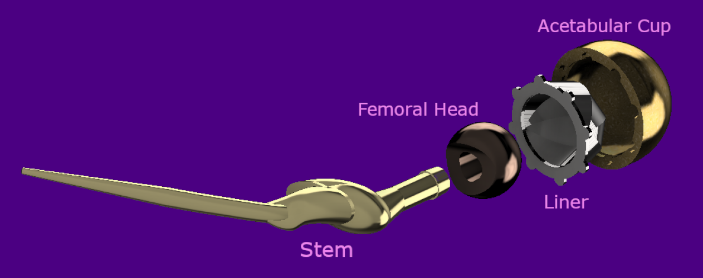
OrthoPivotDec '25
Created OrthoPivot, a custom hip implant designed to address a patient with
residual poliomyelitis in the lower limb undergoing total hip arthroplasty.
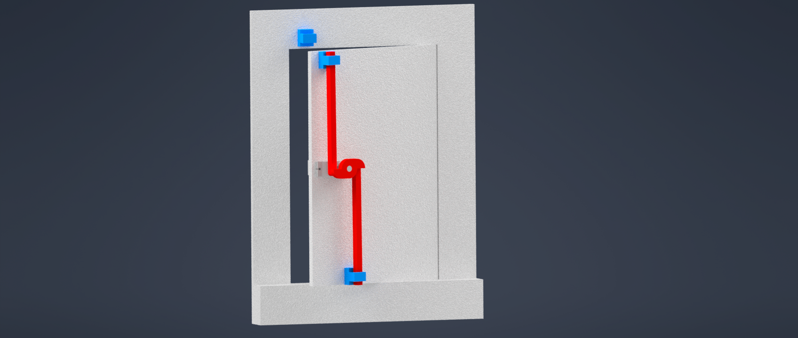
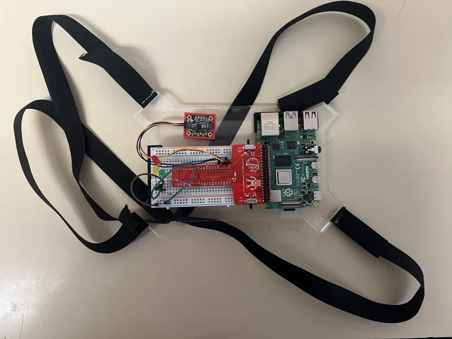
Zzz-P30Feb '26
Designed Zzz-P30, a non-invasive overnight device that detects sleepwalking
episodes, automatically secures room exits to prevent injury, and logs episode data for clinical review.
UpLiftApril '26
Designed UpLift, a cascade closet elevator that brings high storage within reach
for patients with multiple sclerosis and limited mobility.
Twist n' Tell
Oct '25
Prototype demonstration
Patient
Jin-Soo, an ostomate with rheumatoid arthritis struggling with leaks, odor, and difficult locking
mechanisms on his two-piece pouch system.
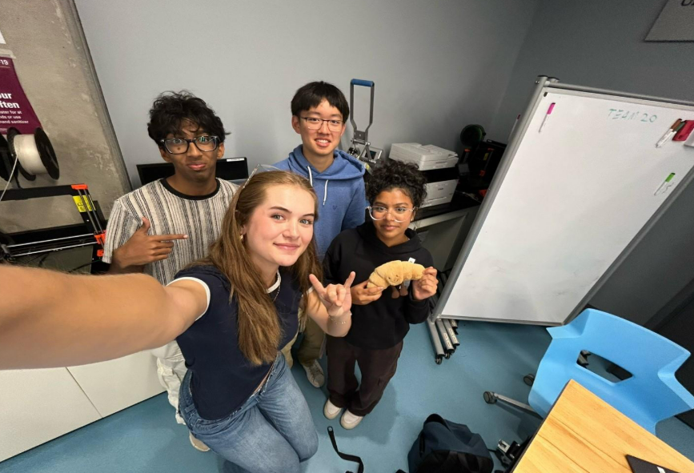
Team 37
Need Statement
Design a modification of an ostomy device for Jin-Soo that provides a secure connection between the
drainable ostomy pouch and the convex flextend skin barrier to reduce tears and leakages, easily operable
for people with limited dexterity and comfortable for long-term wear.
Design Criteria
Constraints
Must not leak or tear
Must conform to health standards and regulations
Must retain core ostomy management functions
Objectives
Comfortable to wear
Easy to operate
Lightweight and durable
Design Process
The team began with group brainstorming focused on visual indicators and assistive features to clearly
confirm a secure seal. Analysis of existing systems from Coloplast and ConvaTec revealed current design
limitations, and in-lab patient interviews surfaced key frustrations, embarrassment from transparent bags
and difficulty with locking mechanisms, which shaped two standout concepts.
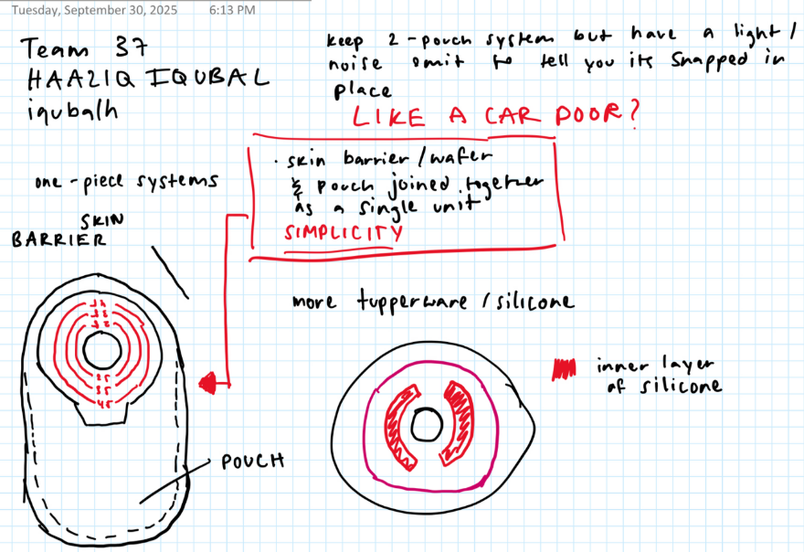
Early ideation sketches
What I Did
Conducted a market analysis of ostomy systems and user-centered design principles for patients with
physical limitations like rheumatoid arthritis. Interviewed an ileostomy patient to understand how well
confidence-building features, such as visual cues and failsafes, perform in real use. Organized a
centralized source materials datasheet to ensure traceability from ideation through prototyping.
Concepts
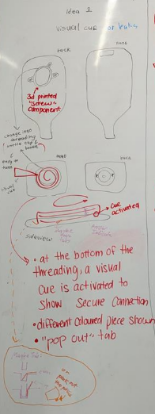
Concept 1, Screw-Tab with Visual Cue
A screw-tab mechanism with a visual indicator at the bottom of the outer ring.
Advantages: Turning/screwing is easier than clicking for RA patients. Visual cues
reduce unnecessary reconnections and extend mechanism lifespan.
Disadvantages: Multiple components increase complexity, manufacturing cost, and
fragility risk.
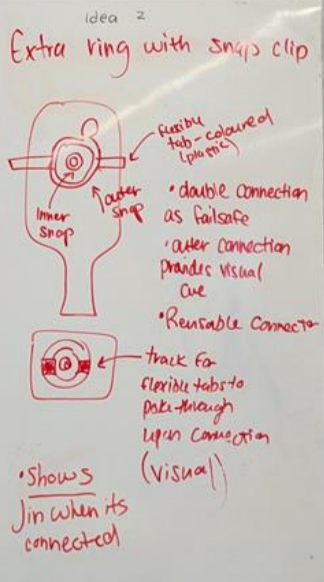
Concept 2, Dual-Ring Failsafe
Two rings with different attachment mechanisms for redundancy.
Advantages: If one ring fails, the other holds, improving failure resistance. Simpler
and reusable overall.
Disadvantages: Fewer visual cues reduce reassurance, and anxiety persists if both
rings fail simultaneously.
Final Direction, A Hybrid of Both
The final design combined the screw-tab ease of Concept 1 with the failsafe redundancy of Concept 2,
using pH paper as a visual leak indicator.
Prototyping
Two low-fidelity physical prototypes were built to move from CAD geometry to tactile human-factor testing.
This stage confirmed that a hybrid screw-fit with pH paper visual cue best met Jin-Soo's needs for both
security and ease of use.
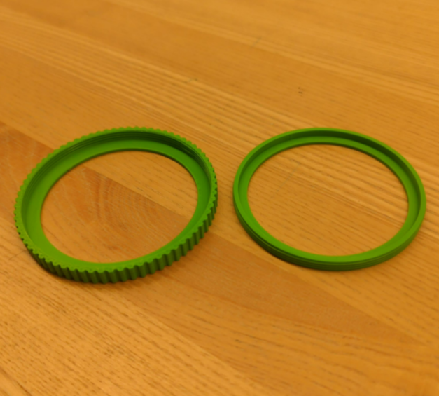
Low-fidelity physical prototype
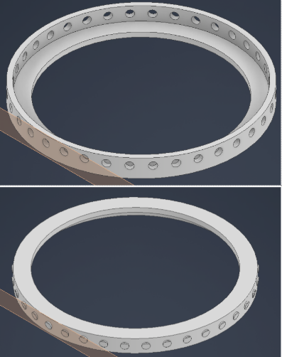
CAD model
What I Did
Authored the comprehensive final report, synthesizing technical specifications and test data aligned with
project objectives. Specified key materials, Shore 40A silicone rubber for biocompatibility and fluid
resistance, and PLA for cost-effectiveness and tensile strength. Assessed feasibility through Ontario's
$950 annual assistive device stipend.
The biggest thing I took away from this project was how much early assumptions can slow a team down. Our
market research initially pointed us toward snap-ring designs, but one patient interview completely
redirected us, revealing that how secure something feels matters far more than how fast it closes.
That stuck with me beyond just this project. I've noticed how easy it is to think you have something
figured out, to act like the research is done and the direction is set, and then one real human interaction
humbles you entirely. Jin-Soo wasn't just a constraint to design around. He was the whole point. I want to
carry that into everything I build going forward, get to the person faster, and listen more than you speak.
My role in documentation and research also shaped the team more than I initially gave it credit for.
Centralizing sources and writing the final report forced me to audit whether our decisions were actually
evidence-based, and sometimes they weren't, which led to better iterations. I want to apply this more
proactively in future projects, building in checkpoints earlier so research informs design before
prototyping rather than after.
If I could do one thing differently, it would be bringing the patient into the process sooner. We
interviewed one ileostomy patient, and it redirected our entire concept. Imagine what two or three
conversations earlier in the process could have done.
OrthoPivot
Dec '25
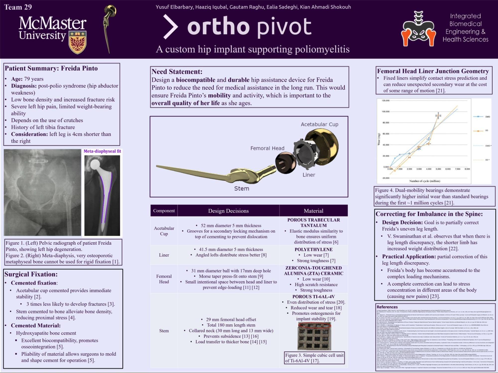
OrthoPivot research poster
Patient
Freida, a long-term crutch user with a 4-cm leg length discrepancy and chronic muscle weakness experiencing
debilitating hip and groin pain resistant to high-dose painkillers. Our team designed a custom hip implant
for her and others with residual poliomyelitis in the lower limb.
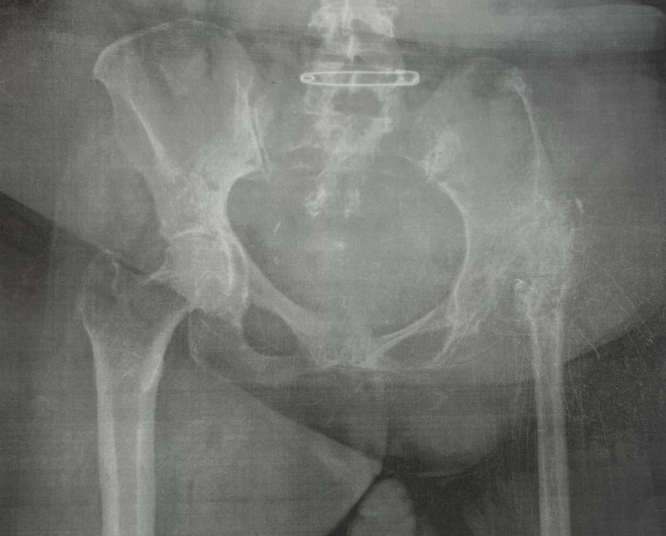
Radiograph of Freida's pelvic region (frontal view)
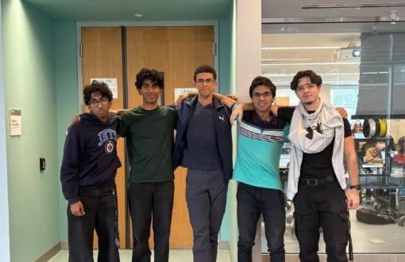
Team 29
Need Statement
Design a biocompatible and durable hip assistance device for Freida to reduce the need for medical
assistance long-term, restoring her mobility and independence as she ages.
Design Criteria
Constraints
Stable, lightweight, and comfortable
Long-lasting with full joint movement
Objectives
Conform to health standards and regulations
Provide pain relief
Durable under fatigue loading
Fully biocompatible
Design Process
Each team member independently developed concepts, which were then compared and synthesized into a final
unified design.
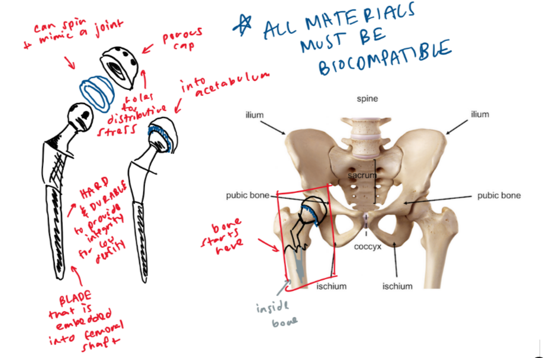
Preliminary concept sketch
What I Did
Developed my own preliminary sketch and fit-in-body diagram, presented to the group for evaluation. Key
feedback from my concept informed the final direction, particularly around fixation safety for low-density
bone and addressing the leg length discrepancy through adjustable offset geometry.
Final Concept — Key Features
Cemented acetabular cup and stem for immediate stability, appropriate for Freida's low-activity profile.
Hydroxyapatite coating to encourage osseointegration through porous surfaces.
Meta-diaphyseal stem fit to transfer loads away from low-density osteoporotic bone.
Angled loft liner for more efficient stress distribution and reduced wear.
31 mm femoral head with intentional clearance to prevent edge-loading.
Partial leg length correction via elongated neck and collar to reduce torque imbalance.
Material Analysis
Stress and strain calculations guided implant dimensioning. Values assumed the implant diameter at half the
inner bone diameter, producing conservative theoretical fracture risk estimates used for design guidance
only, not clinical representation.
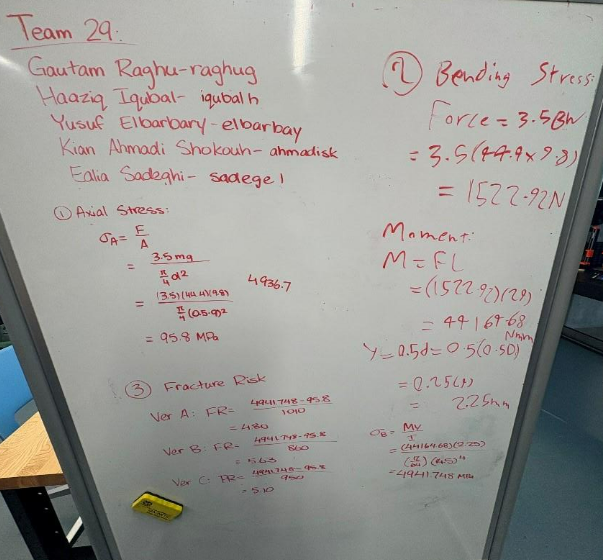
Material stress and strain calculations
CAD & Prototyping
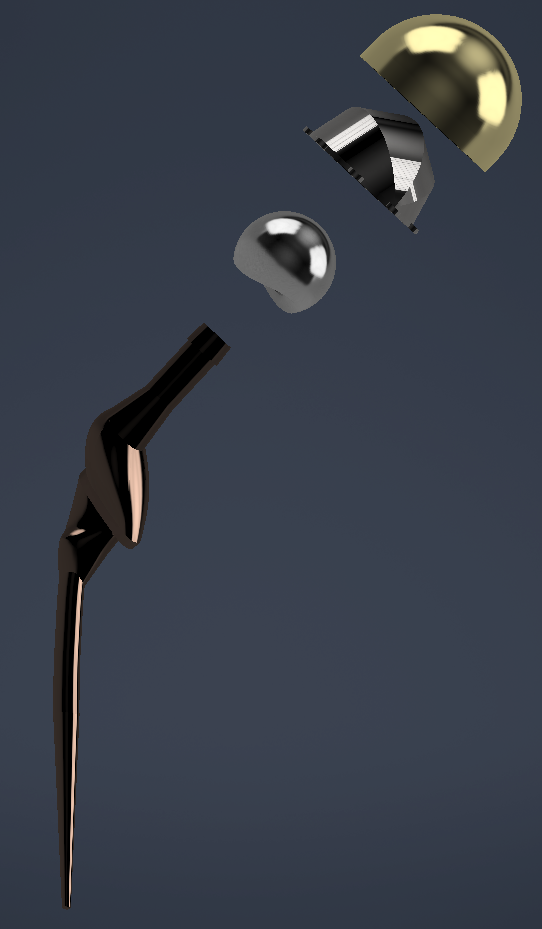
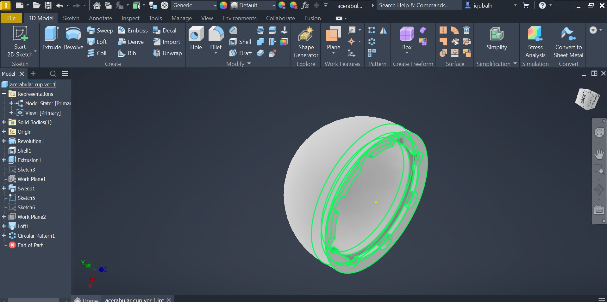
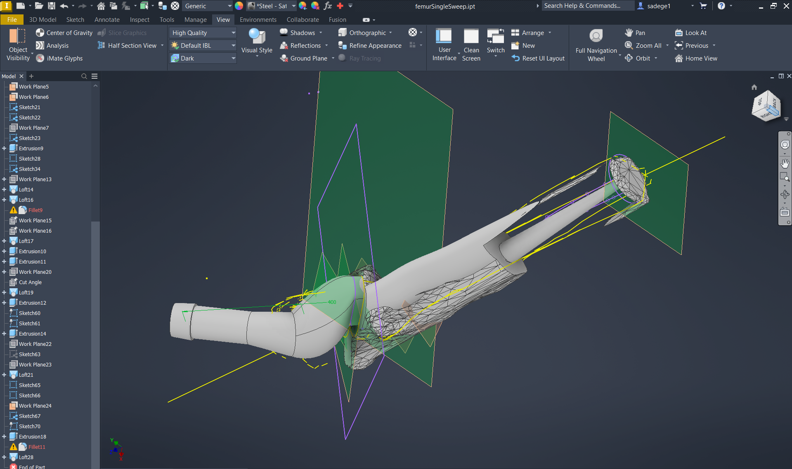
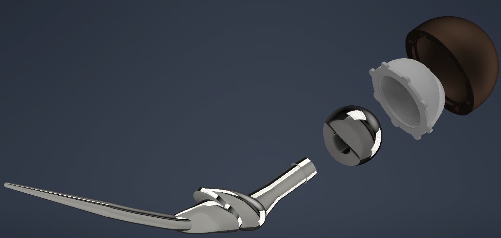
CAD renders and 3D printed prototype
What I Did
Designed the femoral head, acetabular liner, cup, and proximal stem region in CAD, then fully assembled
and constrained the rotating hip joint mechanism. The femoral head's curved geometry enables approximately
20° of rotational freedom, critical for restoring natural hip motion. I also designed the acetabular cup's
clip-and-twist retention mechanism as a secondary failsafe against dislocation. All dimensions were
derived directly from Freida's CT scan bone models for an anatomic fit. Prototypes were sliced in
PrusaSlicer for live showcase printing.
Showcase
The project concluded at the 2025 Fall iBioMed Design Showcase, where OrthoPivot was presented to peers,
professors, and industry professionals.
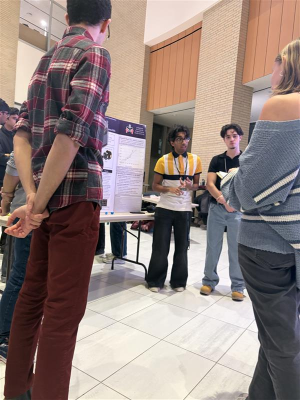
Presenting at the 2025 Fall iBioMed Design Showcase
Working on OrthoPivot made me genuinely more confident in CAD and, more surprisingly, in trusting other
people. I came in thinking I needed to own my section completely. I left understanding that a
well-functioning team produces something none of its members could have alone.
Addressing the 4-cm leg length discrepancy was one of the humbling moments of the project. Our partial
correction via elongated neck and collar reduced torque imbalance, but it so obviously falls short of full
gait symmetry. There must be a way to ensure she has a balanced walk, looking into more research or
biomechanical gait simulations on how her body will interact with this change would be very helpful.
My biggest personal takeaway was about the gap between doing something and communicating it well. I
contributed meaningfully to the CAD work, but I underestimated how much presentation and documentation shape
how that work is received. At the showcase, the teams who told a clear, human story about their patient
landed better than those who led with technical specs, even when the engineering was stronger. I want to
close that gap going forward: build well, but also learn to tell the story of what I built and why it
matters.
I also noticed that I tend to get deep into the details of my own component without zooming out enough to
see how it connects to the full system. My stem and head designs were anatomically precise, but I didn't
fully think through how Freida's body, accustomed to years of an asymmetric gait, would actually respond to
a corrected alignment. That's not just a technical gap. It's a reminder that the person using the device
lives in the real world, not a CAD assembly. In future projects I want to make patient context a checkpoint
I return to throughout the process, not just at the start.
Zzz-P30
Feb '26
Functional prototype demonstration
Need Statement
Design a non-invasive, automated sleep safety device for individuals with chronic sleepwalking and related
disorders to detect and prevent unsafe movement during sleep episodes, reducing the risk of injury and
promoting safety, independence, and peace of mind for both the user and their caregivers.
Why Sleepwalking?
After evaluating several automation ideas with meaningful real-world impact, the team aligned on
sleepwalking prevention as the most compelling and feasible direction. 3.6% of US adults, upward of
8.4 million people, are prone to sleepwalking. Sleepwalkers can perform complex tasks while asleep,
are unlikely to feel pain during injury, and are at high risk for falls, dangerous activities like
sleep-driving, and window exits.
Critically, sleepwalking occurs unpredictably and cannot be stopped from occurring, only its
consequences can be managed. This pointed the team clearly toward a containment solution
rather than a detection-only alarm.
What I Did
Researched and wrote the statement of facts and need statement that grounded the entire project
direction. Key findings about injury risk, the unpredictability of episodes, and the gap in
existing solutions were instrumental in steering the team toward a containment-first approach.
Design Criteria
Objectives
Prevent sleepwalking-related injuries
Detect episodes and alert users or caregivers
Maintain normal sleep conditions
Operate on low power for overnight use
Functions
Detect if user is in bed or moving
Lock door during an episode
Unlock on conscious user input
Log episode data for clinical review
Constraints
Fully automated, minimal user intervention
One sensor and one actuator only
Must adhere to health regulations
Design Process
The team evaluated sensors and locking mechanisms as the two core components. Sensors considered
included orientation sensors (gyroscope), force-sensitive resistors at bed corners, and heart rate
sensors. Mechanisms considered included a linear actuator, a servo motor, and a vertical deadbolt
pin-style cam lock.
A concept evaluation matrix comparing eight designs identified the orientation/FSR
sensor and the door actuator/servo cam shaft lock as the strongest
overall concepts, scoring highest in functionality, feasibility, and cost.
Criteria
Motion Sensor Alarm (Datum)
Auto Door Lock (Motion + Light)
Temp Sensor + Door Lock (Linear + Climate)
Heart Rate Sensor + Door Lock
Orientation Sensor + Door Actuator
Temp Sensor + Door Actuator
FSR Sensor + Servo Lock
Orientation Armband + Drop Sheets
Functionality (D)
+
+
+
+
+
+
+
User Safety (A)
−
−
−
−
−
0
+
User Comfort (T)
+
+
+
0
+
+
−
Feasibility — code (U)
0
0
0
+
0
+
0
Feasibility — CAD (M)
0
0
0
+
0
0
+
Cost
+
+
0
+
0
0
0
Total +
3
3
2
4
2
3
3
Total −
1
1
1
1
1
0
1
Total Score
2
2
1
3
0
3
2
What I Did
For Concept 3, designed the full concept around FSR sensors and a Dual CAM Linkage system.
Created the flowchart logic for determining sleep zones based on force unevenness and time,
designed the dual cam linkage with its three stages (green, yellow, red), drew the mechanics
and storyboard illustrating how the system works end to end, and planned the app flow for
turning the system on, unlocking the door manually, and reviewing sleep data in the morning.
Concept 3, cam shaft lock mechanical drawing
Concept 3, flowchart
Concept 3, storyboard
Final Concept
The final direction combined a cam shaft locking mechanism, a chest-mounted orientation sensor,
and a Raspberry Pi app built in Pygame. Chest placement was chosen over the original armband
because it provides more reliable gyroscope and orientation data with less noise from normal
arm movement during sleep repositioning.
Three-State System
GREEN, cam fully disengaged, door unlocked, user at rest. YELLOW, cam partially rotates, creating resistance. Possible movement detected. RED, cam fully engages, door temporarily prevented from opening. Sleepwalking episode likely.
Final dual cam linkage mechanical drawing
Final concept flowchart
Final concept storyboard
Coding
The final software system continuously monitors body motion using a chest-mounted orientation
sensor, reading angular velocity from the gyroscope and linear acceleration across five data
streams. Rather than reacting to single sudden movements, it builds rolling averages and standard
deviations across a 10-point buffer to distinguish genuine sleepwalking from normal repositioning.
A persistence timer ensures the lock only activates during sustained abnormal movement, reducing
false alarms.
Motion magnitude is compared against predefined thresholds using a statistical probability model
based on a normal distribution of sleep movements, estimating the likelihood that current movement
exceeds normal resting behaviour.
Live Pygame caregiver interface
What I Did
Built the full software system: sensor integration with the orientation sensor, a NumPy-based
statistical probability model for estimating sleepwalking likelihood, a three-state machine
(GREEN → YELLOW → RED) with persistence timing to prevent false alarms, and the Pygame display
interface for real-time caregiver feedback. Colored LEDs and a live graphical interface provide
immediate visual feedback. All session data is logged for clinical review.
Hardware & CAD
CAD, door lock cam mechanism
CAD, chest plate sensor wearable
Fully wired breadboard assembly
Skills Developed
Python / PygameEmbedded Systems (Raspberry Pi)Statistical Modelling (NumPy)Sensor IntegrationComputer-Aided DesignState Machine DesignResearch & Need Statement WritingConcept Evaluation
Reflection
This project was the first time I owned something end to end, the research, the need statement, and the entire software system. That was new for me, and uncomfortable in a good way. There was no one else to hand off the hard parts to. When the probability model wasn't behaving the way I expected, I had to sit with it and figure it out. I did. That quiet confidence of knowing you built something that actually works is something I want to keep chasing.
What I also learned about myself in the process is that when the bigger picture gets loud, deadlines, debugging, documentation all at once, I spiral instead of organize. Going forward I want to deliberately carve out one day (hump day/wednesday) in the week to organize things and make sure that things are moving in the right direction.
What caught me off guard though was how much this project changed the way I experience sleep personally. Spending weeks immersed in sleepwalking research, movement thresholds, and sleep state logic made me hyper-aware of my own nights. I started noticing how the tail end of my dreams would reshape themselves around sounds in my environment: a door closing, a phone buzzing weaving real-world noise into whatever my mind was constructing. It made the project feel less abstract and much more alive. People seem to take sleep for granted so often but it's really a pivotal part of your day that is left forgotten, maybe this DP3 did teach me to get more ZZZs especially instead of going to morning lecture.
Using NumPy pushed me to think beyond simple threshold detection toward statistical confidence. Recognizing that sustained consistency matters far more for accurate detection than any single spike. In the future, exploring models more sophisticated than the normal distribution CDF could unlock meaningfully better accuracy, particularly through multivariable regression that captures the full complexity of sleep, incorporating environmental factors like temperature and ambient noise rather than relying solely on movement averages. Sleep is a rich, multi-dimensional phenomenon, a good next step is building a system that treats it that way.
UpLift
April '26
Functional prototype — front
Functional prototype — back
Functional prototype demonstration
Client
Jany, 75, has lived with multiple sclerosis for 35 years. Numbness in her right thumb and first two fingers means grip-dependent tools are largely useless to her. Reaching above her head causes exhaustion and risks a fall, she already washes her hair in the kitchen because she's afraid of falling in the shower. She still drives, uses an iPad, and wakes up every morning to wave at her grandchildren, but the gap between what she wants to do and what her body allows is wide and widening. The clearest unmet need was high-shelf access: cupboards and closet storage she simply cannot reach safely.
Team 20
Need Statement
Design a simple and user-friendly device to assist Jany, a 75-year-old female with multiple sclerosis, in reducing the physical strain and injury associated with daily activities. This device must be efficient and accommodate fatigue, impaired hand dexterity, assistive walking devices, and limited upper body strength to support continued engagement with her family and grandchildren.
Design Criteria
Objectives
Allow Jany greater independence in daily tasks.
Reduce the physical effort required to access high-stored items.
Lower the risk of injury, falls, and exhaustion.
Support continued engagement with her grandchildren and family life.
Functions
Lower stored items from high shelves to a reachable height.
Operate with a single button press requiring no grip strength.
Return the platform to the raised position on the next press.
Indicate system state clearly through LED feedback.
Constraints
Must not obstruct Jany's walker pathways.
Must be lightweight and durable for frequent use.
Must follow health and safety guidelines.
Must complete the task more efficiently than her current approach.
Design Process
The team evaluated five concepts against a Pugh matrix: Winch Hand Strengthener (baseline), Cascade Elevator, Button Tool, Vertical Lazy Susan, and Assistive Arm.
Criteria
Winch Hand Strengthener (Baseline)
Cascade Elevator
Button Tool
Vertical Lazy Susan
Assistive Arm
Increase independence
S
S
S
S
S
Reduces fatigue
S
+
S
+
S
Reduces physical strain
S
S
−
+
−
Compatible with walker
S
+
+
−
+
No requirement of upper body strength
S
+
S
+
−
User friendly
S
S
−
+
S
Total +
−
3
1
4
1
Total −
−
0
2
1
2
Total Score
−
3
−1
3
−1
The Vertical Lazy Susan and Cascade Elevator both scored +3 and were shortlisted. Design review feedback from mentors identified the cascade elevator as more structurally stable and unique, with the pulley symmetry and bearing system offering a more reliable and scalable mechanism. The Lazy Susan was set aside after TA review.
Mentor feedback across two design reviews shaped three key decisions, use bearings and trusses to support the elevator frame, add a hinged flap or rotating arm so Jany can move items out of the path when the carriage descends, and use spool diameter to control descent speed rather than adding gear reduction.
Initial concept sketch — cascade spool elevator
Glove load transfer concept sketch
What I Did
Researched client needs through the interview process and developed my own ideas and concept sketches for the Winch Hand Strengthener, and initial Cascade Spool Elevator which were presented to the group for evaluation.
Concepts
The final direction combined a two-stage cascade pulley rig, wood frame with two stages and an intake carriage, frictionless bearing sliders, and a Raspberry Pi.
The cascade works in two stages, the motor pulley is static and drives stage one up and down, and the carriage moves as a consequence of stage one moving, multiplying travel distance through the rigging without requiring a longer stroke from the motor.
What I Did
Produced all elevator dimension sketches for the three frames and drafted the pulley rigging diagrams that defined the cascade cable routing.
Stage 1 — dimension sketch
Stage 2 — dimension sketch
Intake carriage sketch
Pulley rig — annotated
Final pulley rigging diagram
CAD & Assemblies
The system has three main assembly components. Motor that rotates the driving stage pulley. Regular tensioning pulleys for the rest of the cable runs. And metal bearings slide along the wooden frame to keep the motion smooth and stable. Together, these parts create a simple, controlled lifting system.
Frictionless bearing slider
Motor-with-pulley assembly
Pulley-axle-lever bracket
Moving assembly — frictionless bearing wood bar
Hardware
The prototype uses six core components working together. The laser-cut wood frame provides the vertical structure, first stage width at 200×25×15 mm, second stage at 148×25×15 mm, and an intake carriage. Two geared DC motors wind and unwind the string cables through a two-run cascade pulley rig (Cable Run 1 and Cable Run 2), routing through top and bottom crossbars to multiply travel distance and keep movement symmetric. Custom-modelled ball bearing sliders 3D-printed in brackets allow the carriage to move smoothly with minimal friction. The Raspberry Pi runs the control script with a breadboard managing the motor driver and LED outputs. The acrylic base plate designed, dimensioned, and laser-cut anchors the frame, mounts the electronics, and provides outrigger cable tie-off points for structural stability.
What I Did
Modelled all CAD assemblies in Autodesk Inventor, the frictionless bearing slider, pulley-axle-lever bracket, motor-with-pulley assembly, and original spool concept. Designed and laser-cut the acrylic base plate. Led all print manufacturing and frame assembly.
Frame assembly
Laser-cut acrylic base plate
Coding
The code is centered around a button that controls the elevator and switches it between stages. The system initialises by running both motors forward for ten seconds, driving the carriage to the ground position. A green LED indicates ready; yellow indicates motion. From there, a single button toggles the elevator between up and down states, motors reverse direction on each press and run for a fixed duration before stopping. The state is tracked in a variable so the system always knows which direction to move next.
Elders like Jany are not only dealing with reduced mobility or strength, but are increasingly living in environments shaped by younger generations. Especially after the pandemic and during long winters, much of daily life has moved indoors and onto screens. Communication, entertainment, and even connection with family now happen through devices. In a way, this mirrors the lifestyle often associated with younger generations, constant interaction with technology, mediated experiences, and less physical movement. For Jany, something as simple as accessing a cupboard turning into a complex task dictated by electronics probably feels apocalyptical. One is driven by convenience and habit, the other by necessity and limitation.
Designing the elevator made this gap more visible to me. The goal wasn't just to move objects from a high shelf to a lower height, but to reduce the growing distance between what Jany wants to do and what she is physically able to do. Preserving independence. Reflecting on the finished project, I realize that a simple button interface, while functional, was not enough. I overlooked the importance of allowing Jany to maintain active movement in her hands and arms. If I were to redo this project, I would definitely work to incorporate design elements that encourage this physical engagement rather than bypassing it.
When I understand things conceptionally, with all the little gears working in my brain. Sometimes, occasionally, I feel as though I struggle to articulate myself well (stuttering, brain fog) which lowers my self-esteem, confidence and overall mood to converse with those around me. It's just so hard to recognize that people can't see that cascade rig that I'm able to visualize just as clearly. I need to work on sharing engineering design better, maybe with little parts and demonstrating how they move instead of just drawings, diagrams and talking. I'm very appreciative of my team for having the confidence to go through with my idea although they didn't fully connect with it until it was actually built and demonstrated.